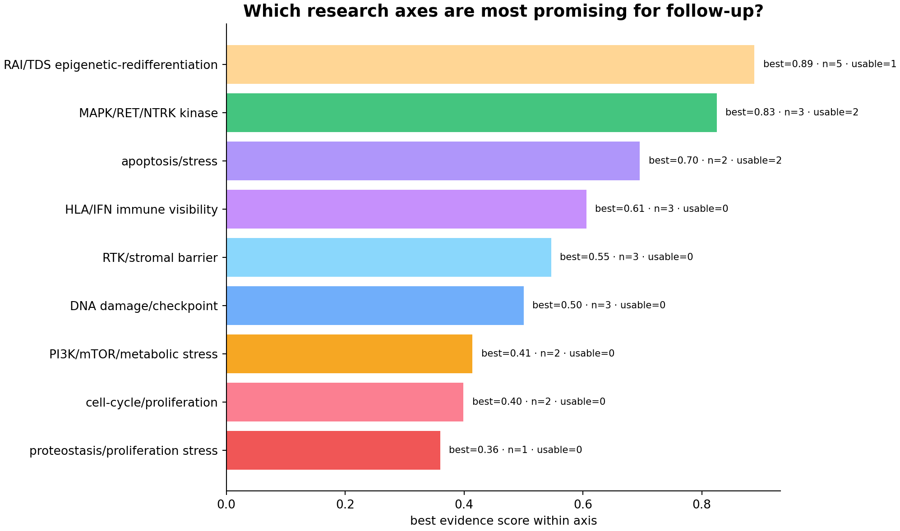
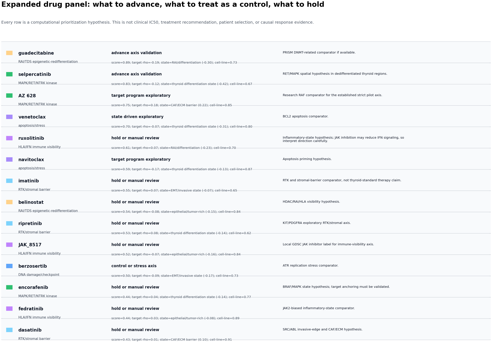

Spatial drug vulnerability · expanded research panel · 2026-05-10T08:05:44
Research-Aligned Drug Expansion
More drugs, but organized around the actual THCA axes: MAPK/RET/NTRK, RAI/TDS redifferentiation, HLA/IFN visibility, stromal barrier, metabolism/hypoxia, proliferation, DNA damage, proteostasis, and apoptosis.
{kind=link}
{kind=link}
24modeled drugs
9research axes
5usable hypotheses
0clinical claims
Boundary: predicted drug vulnerability score / spatial response hypothesis map only. Not measured spot-level IC50, not treatment recommendation, not patient selection.

How To Read The Guided Panels
| Visual mark | Meaning | Action |
|---|---|---|
| Orange contour | Highest relative predicted drug vulnerability pocket on the H&E tissue. | Use this region first for validation ROI selection. |
| Cyan contour | Drug target-program direction, using the sign supported by the target/state evidence matrix. | Check whether the drug score overlaps target biology. |
| Numbered circles | Concrete ROI candidates inside or near the hotspot pocket. | Prioritize these for IHC, RNAscope, IF, or perturbation readouts. |
| Right-side text box | Why highlighted, spatial readout, biology cue, validation action, and forbidden claims. | Use as figure-reading guide, not as clinical interpretation. |
Korean short read: 주황색은 predicted vulnerability hotspot, 하늘색은 target-program 방향, 번호는 validation ROI 후보입니다. 오른쪽 박스가 이 약물을 왜 보는지와 무엇을 주장하면 안 되는지까지 같이 설명합니다.
Top Expanded Panel
| Drug | Axis | Decision | Target rho | Top state | Score |
|---|---|---|---|---|---|
| guadecitabine | RAI/TDS epigenetic-redifferentiation | advance axis validation | -0.19 | RAI/differentiation (-0.30) | 0.89 |
| selpercatinib | MAPK/RET/NTRK kinase | advance axis validation | -0.12 | thyroid differentiation state (-0.42) | 0.83 |
| AZ 628 | MAPK/RET/NTRK kinase | target program exploratory | 0.18 | CAF/ECM barrier (0.22) | 0.75 |
| venetoclax | apoptosis/stress | state driven exploratory | -0.07 | thyroid differentiation state (-0.31) | 0.70 |
| ruxolitinib | HLA/IFN immune visibility | hold or manual review | 0.07 | RAI/differentiation (-0.23) | 0.61 |
| navitoclax | apoptosis/stress | target program exploratory | -0.17 | thyroid differentiation state (-0.13) | 0.59 |
| imatinib | RTK/stromal barrier | hold or manual review | 0.07 | EMT/invasive state (-0.07) | 0.55 |
| belinostat | RAI/TDS epigenetic-redifferentiation | hold or manual review | -0.08 | epithelial/tumor-rich (-0.15) | 0.54 |
| ripretinib | RTK/stromal barrier | hold or manual review | 0.08 | thyroid differentiation state (-0.14) | 0.53 |
| JAK_8517 | HLA/IFN immune visibility | hold or manual review | -0.07 | epithelial/tumor-rich (-0.16) | 0.52 |
| berzosertib | DNA damage/checkpoint | control or stress axis | -0.09 | EMT/invasive state (-0.17) | 0.50 |
| encorafenib | MAPK/RET/NTRK kinase | hold or manual review | 0.04 | thyroid differentiation state (-0.14) | 0.44 |
| fedratinib | HLA/IFN immune visibility | hold or manual review | 0.03 | epithelial/tumor-rich (-0.08) | 0.44 |
| dasatinib | RTK/stromal barrier | hold or manual review | 0.01 | CAF/ECM barrier (0.10) | 0.43 |
| rapamycin | PI3K/mTOR/metabolic stress | hold or manual review | -0.09 | epithelial/tumor-rich (-0.08) | 0.41 |
| ATRA | RAI/TDS epigenetic-redifferentiation | hold or manual review | -0.04 | hypoxia/delivery proxy (-0.11) | 0.41 |
| dinaciclib | cell-cycle/proliferation | control or stress axis | 0.03 | CAF/ECM barrier (-0.13) | 0.40 |
| PI3Kd-IN-2 | PI3K/mTOR/metabolic stress | hold or manual review | -0.03 | CAF/ECM barrier (0.14) | 0.40 |
Evidence Figures


{kind=link}


